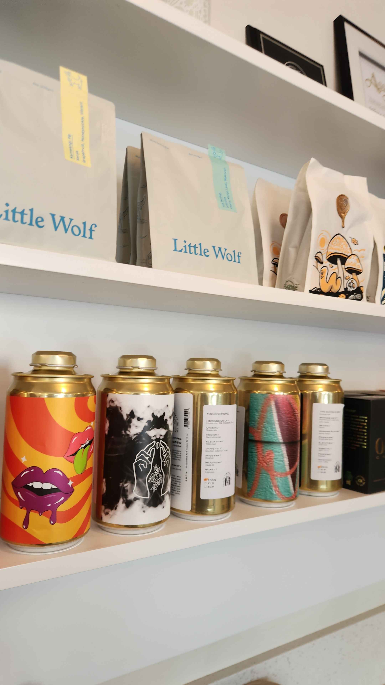
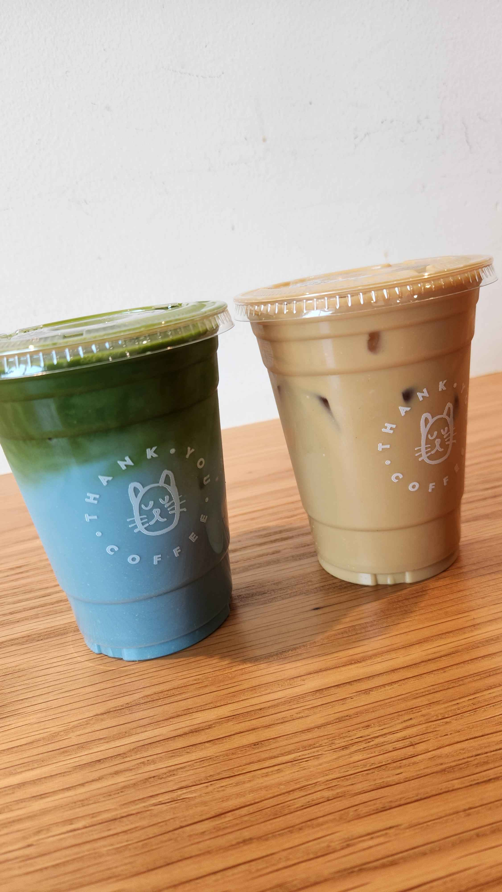
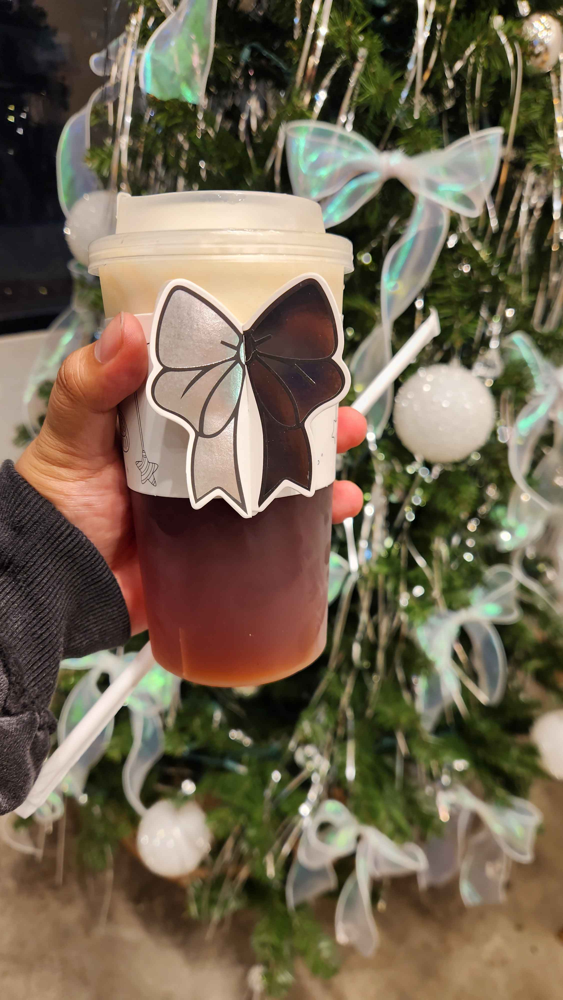
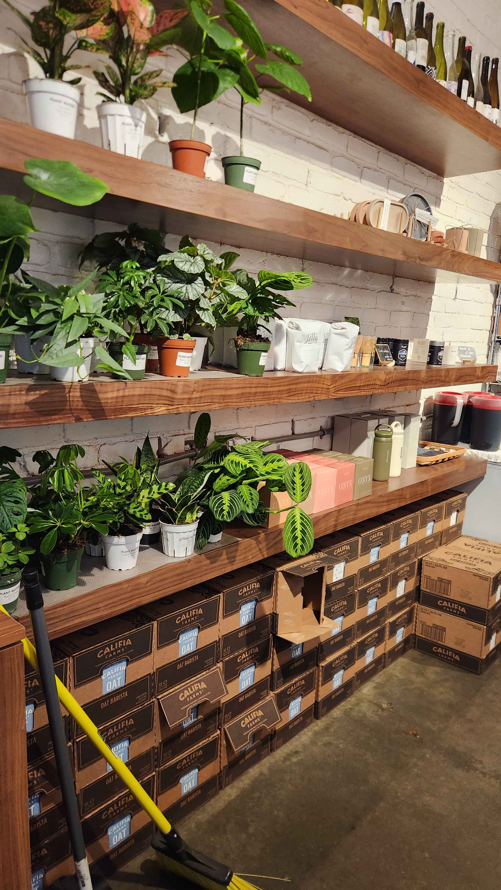
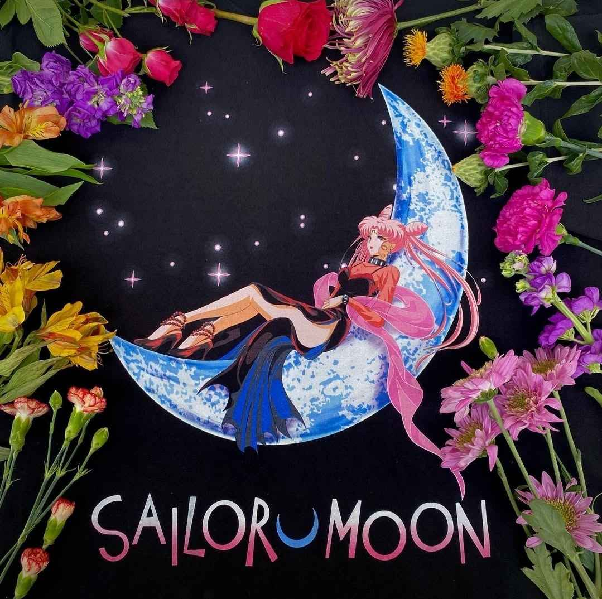
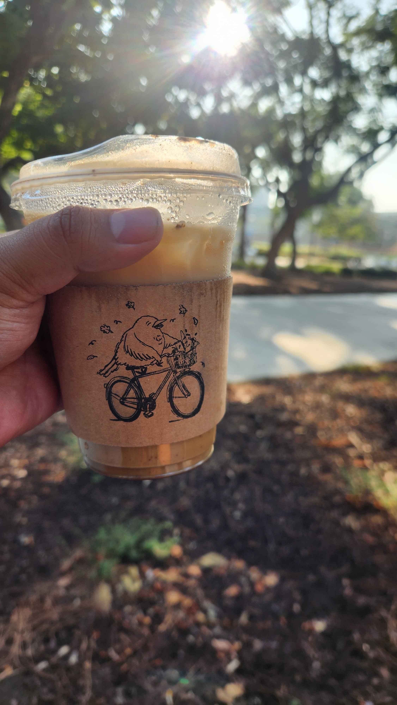
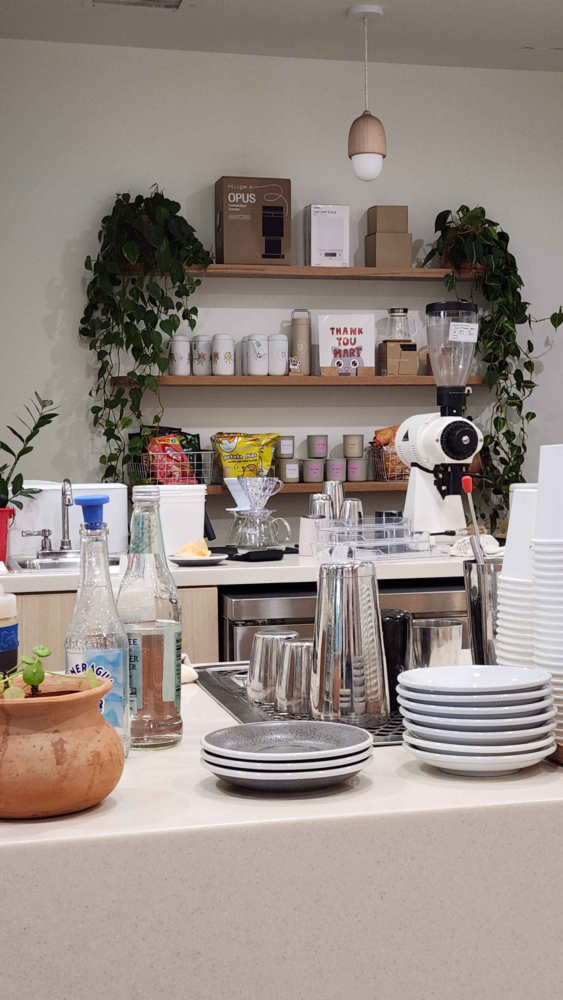
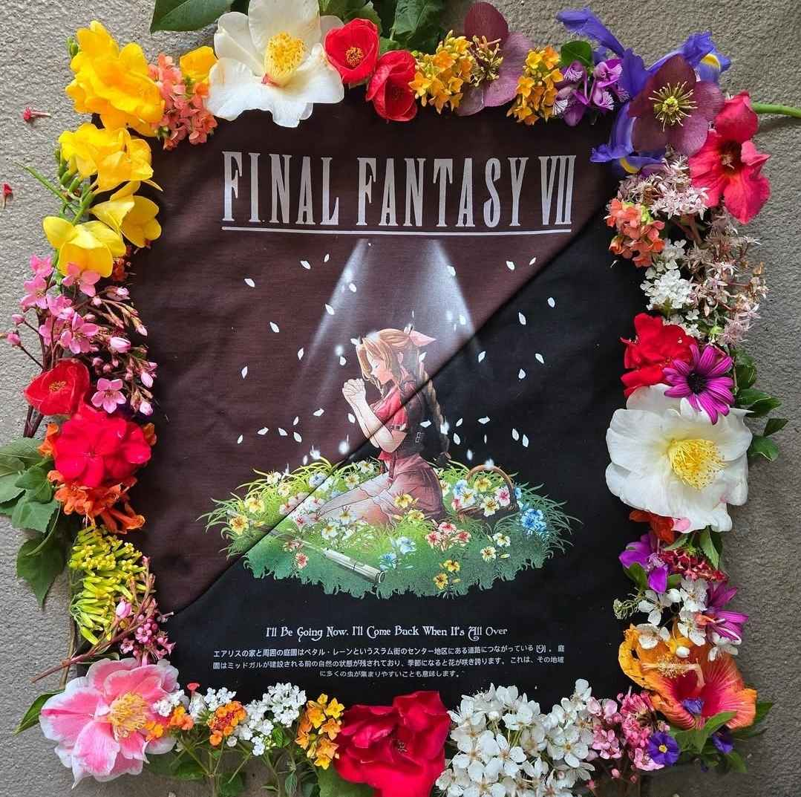

About Me
Hello, my name is Bernabe Amaya. I am a passionate aspiring computer science major with a strong interest in robotics engineering, designing, building, and operating robots and robotic systems.
I have experience in web development and computer science fundamentals. Currently, I am working on exciting projects with Arduino.
When I am not coding, I enjoy getting coffee, gaming, music, street fashion, and photography.
Feel free to download my resume below to learn more about my skills and experiences:
Download My ResumePhotography
Here are some of my favorite coffee shop photos and clothing that inspire me:







